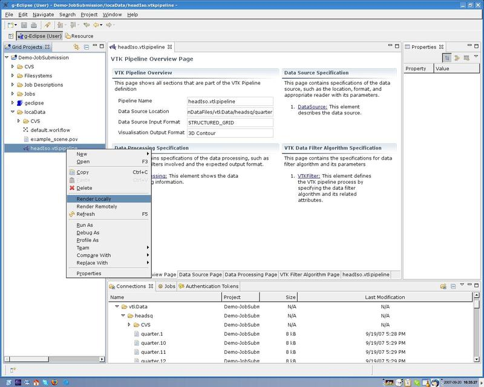
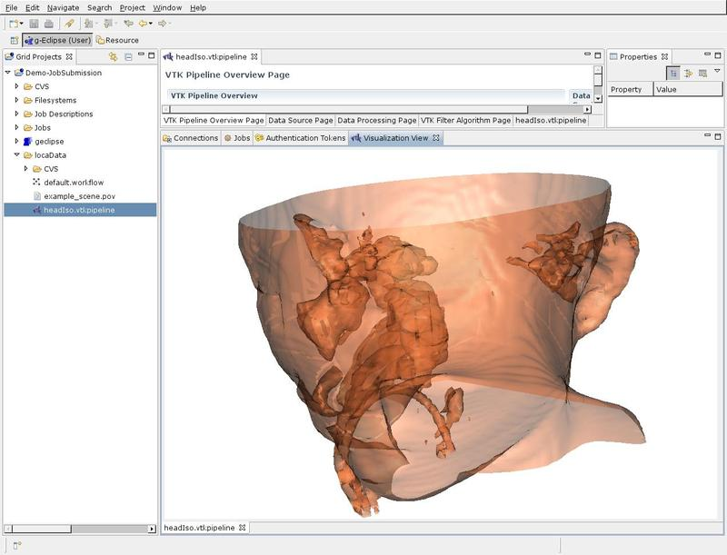

Prerequisite: Have created a VTK Pipeline file (*.vtkpipeline), with fully defined algorithm set and an absolute path to the location of an existing data set. Refer to Creating VTK Pipeline File and Specifying VTK Pipeline Content
Step 1: Right-click on the VTK Pipeline file and select "Render Locally". The figure below shows this action, which will bring up the Visualisation view and after a short while (note that due to the loading of the VTK module, the first time will take longer) your processed data will be displayed.  Figure 1: Invoking an action to perform local data rendering.
Step 2: Explore the data using your mouse. The basic interaction commands are zoom (right-click), rotate (left-click) and move (middle button). In the final implementation, more interaction options will be integrated, such as sliders to move the algorithm parameter values, etc.
You will see a locally rendered image as shown on the figure below.  Figure 2: Iso surface of a head extracted from volume data.